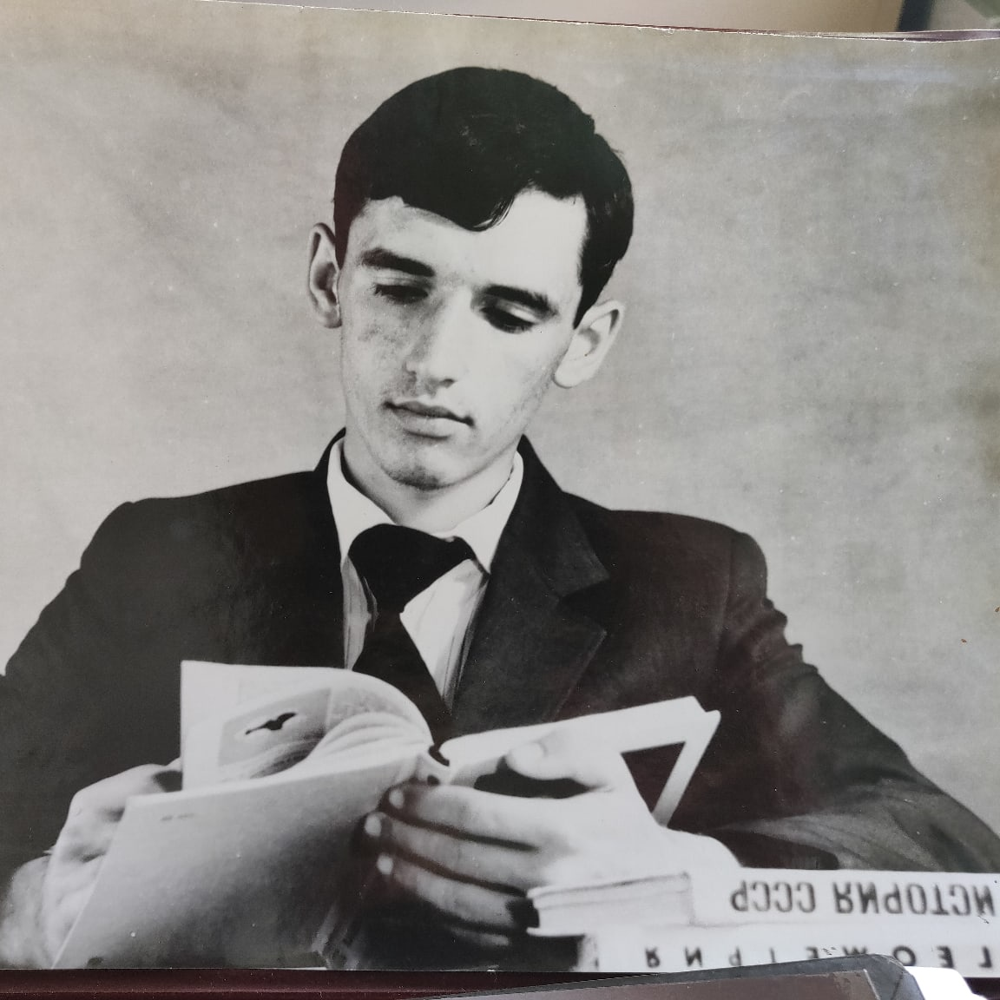
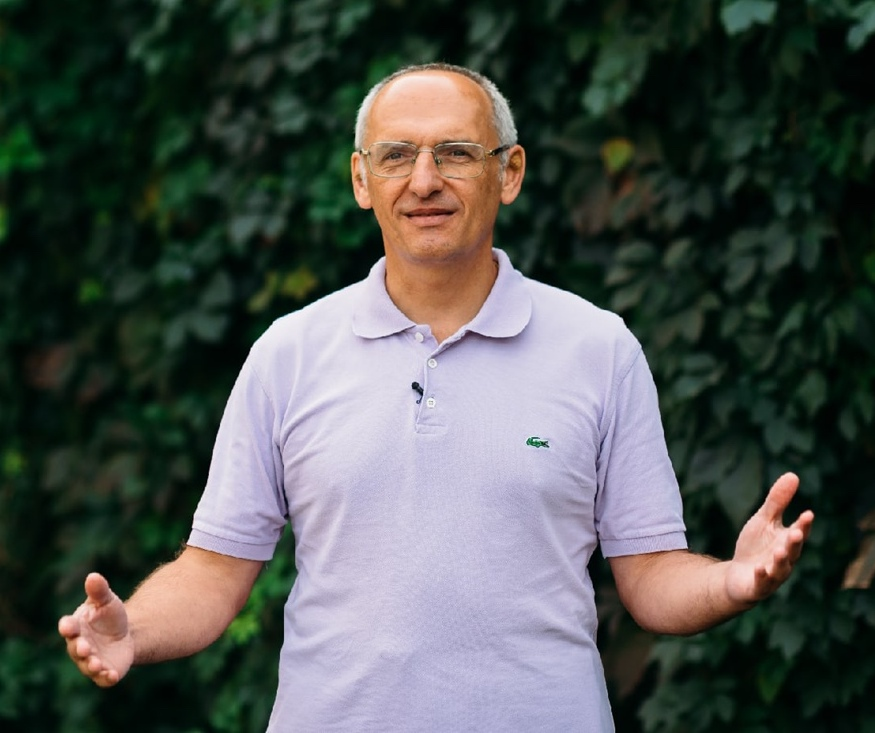
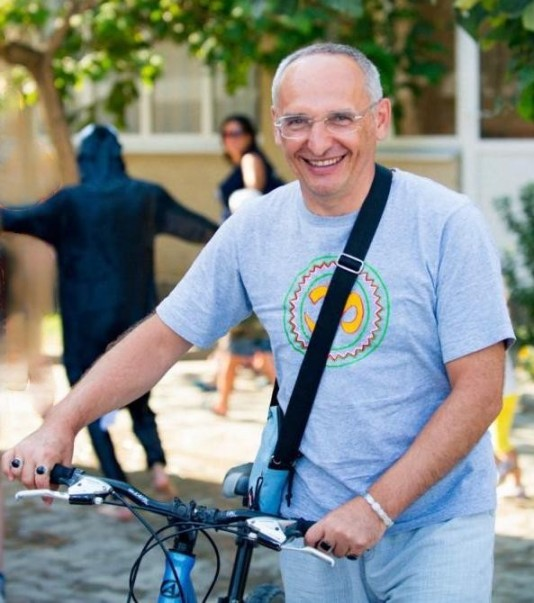
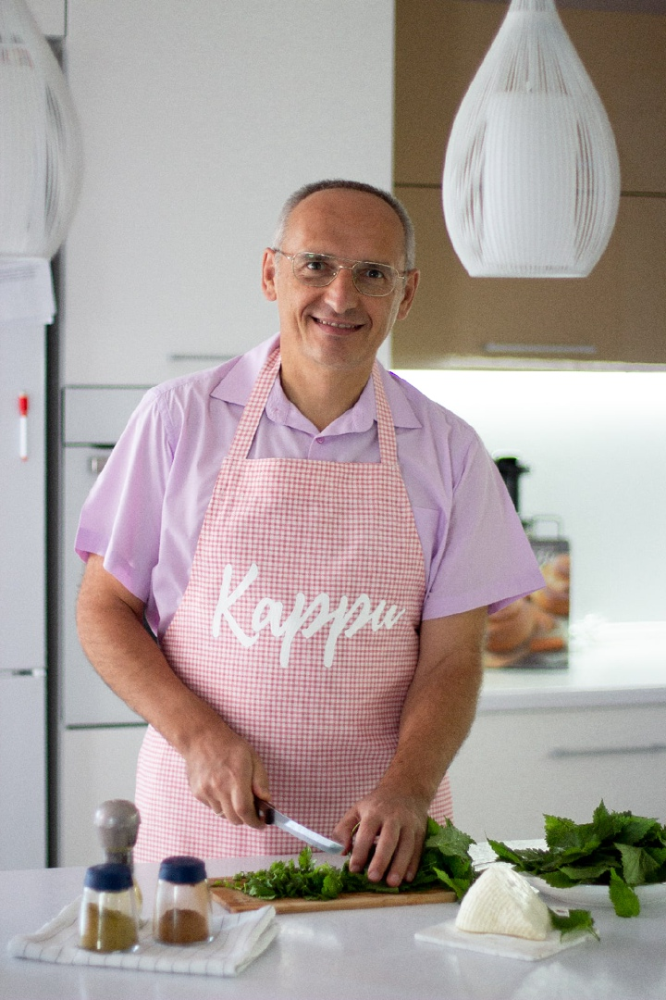
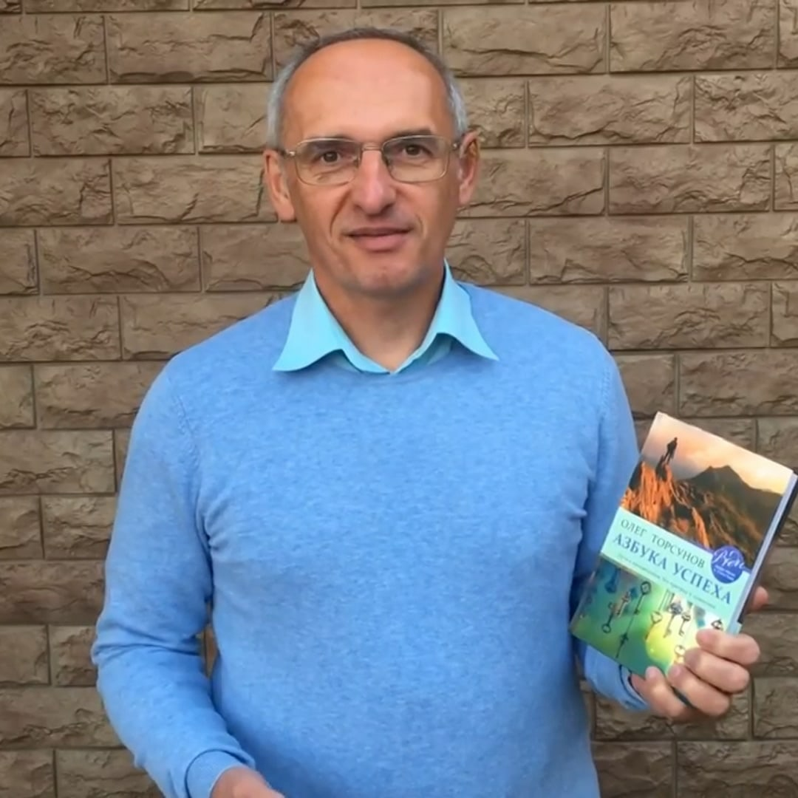
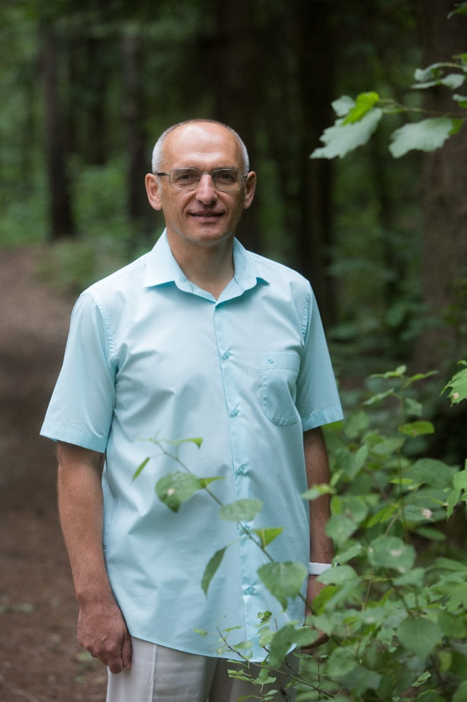

Краткая презентация Олега Геннадьевича Торсунова, создателя авторских оздоровительных методик, ученого — кандидата медицинских наук, популяризатора ЗОЖ, известного во всем мире лектора и писателя.

О лекторе
Родился на Урале в городе Серов 2 марта 1965 года в обычной рабочей семье. Окончив школу, Олег Торсунов успешно отучился в медицинском училище. После этого продолжил учебу в Самарском мединституте. Закончив второй курс, был призван в армию, где служил на должности санитарного инструктора.
После службы, в 1992 году закончил медицинский институт. По окончании академической учебы поехал в Индию для изучения таинств местной медицины и древней ведической культуры.

Методология, практики, учения
Информация и познания, которыми владеет и транслирует на своих лекциях Олег Торсунов, простираются гораздо шире официальных рамок западной медицины. Автор уникальных методик глубоко погружен в тему древних ведических практик, делясь со слушателями особенностями строения энергетического тела человека и другими аспектами жизни: как возникают болезни; что из астрологических аспектов влияет на судьбу, здравость тела и духа человека; делится кармическими знаниями и о реинкарнации; помогает построить гармоничные отношения в семье между супругами и воспитывать счастливых детей; найти свой путь и познать тайны мироустройства Вселенной.

Особое внимание уделяется популяризации здорового образа жизни от образования полезных привычек и режима дня до детальных вопросов правильного питания. Авторские методики Олега Торсунова пользуются большим успехом. Его фирменный метод «позитивной мотивации на высшие гуманитарные ценности» в 2012 году стал основой для защиты научной кандидатской диссертации. При помощи фитотерапии и минералов он разработал собственную систему диагностирования болезней, а также лечение отдельных заболеваний на основе природных материалов
Признанный эксперт в психологии семейных отношений и автор многих эффективных практик личностного роста. Вот уже на протяжении свыше тридцати лет Олег Геннадьевич Торсунов досконально погружен в тему Восточной медицины, физического здоровья и духовного совершенствования человека. В своих книгах, лекциях и семинарах он в доступной форме пытается максимально адаптировать древние знания к современным условиям сегодняшних реалий в общественных и личных взаимоотношениях.
Результаты, успехи, активности
Посвятил целую книжную серию эффективным лечебным практикам «Добрые советы доктора Торсунова». В книгах раскрываются доступные и, главное, эффективные методы лечения ряда распространенных болезней от простуды, ОРЗ и гриппа до гепатитов с гипертонией. Большим успехом у читателей также пользуется отдельная книжная серия «Законы счастливой жизни», которая раскрывает принципы гармоничной жизни из древних сакральных писаний.
Регулярное чтение лекций и проведение лекций с семинарами по всему миру, включая страны Европы и Северной Америки. Выступления на телевидении и других средствах массовой информации с переводом на английский язык для иностранной аудитории. Многие книги и лекции О.Г. Торсунова уже переведены на разные языки мира и нашли своего читателя. Отдельно стоит упомянуть деятельность «Веда-радио» в интернете, которое вещает с 2006 года на русском языке и позволяет бесплатно всем желающим познакомиться с ведическим знанием.

Просветительский центр «Сарасвати», основанный Олегом Торсуновым, обучает тысячи людей здоровой жизни в гармоничных отношениях, в которых особое место занимают самоосознание и самосовершенствование. В проекте также участвуют такие эксперты и мастера своей в области, как Олег Сунцов, Вячеслав Рузов, Владимир Слепцов и другие приглашенные лекторы.
Благодаря деятельности Олега Геннадьевича Торсунова, во многих городах мира появились клубы «Благость», где все желающие могут найти единомышленников, вместе практиковать здоровый образ жизни, духовно развиваться, делиться своим опытом от полученных практик и помогать друг другу совершенствоваться.
Для усовершенствования своих подходов к восстановлению здоровья людей, в 2004 году доктор Торсунов основал центр оздоровления "Амрита". Изначально располагавшийся в Москве, с 2010 года он успешно функционирует в регионе под Краснодаром. В комплексе действует с 2013 года профилактический отдел «Камень здоровья», где профессионально занимаются подбором природных минералов для улучшения психофизического состояния человека.

Научные работы и исследования
Доктор О.Г. Торсунов совместно с коллегами ведет научную деятельность и продолжает академическую карьеру. На VII Международной конференции «Современные аспекты реабилитации в медицине» (2015 г.) он представил статью про оздоровительную методику лечения вегетативных нарушений в особых условиях при помощи традиционной и восстановительной терапии. В научной работе описывает подробное применение минеральных даров природы в сравнении с процедурой иглоукалывания.
В том же году на научно-практической конференции «Реабилитация и профилактика» О.Г. Торсунов представил для международных участников доклад по теме уникальных техник рефлексотерапии с использованием кристаллов. Подробное изложение методики и анализ полученных результатов заслуживают отдельного изучения.

Оценка, принятие и успех
В 2015 году Олег Геннадьевич Торсунов награжден золотой медалью Российской академии естественных наук им. Мечникова за весовым вклад в укрепление физического и духовного здоровья нации. Международно признанный эксперт по вопросам психологии, восточной медицины и ведических древнеиндийских знаний, он помогает людям излечиться - обрести здоровье и гармонию.
Международная Академия Трезвости присвоила доктору Торсунову ученое звание профессора за заслуги во внедрении трезвого образа жизни в национальное сознание. От депутатов на высшем государственном уровне в 2014 году им было получено благодарственное письмо от комитета по делам общества и религии за активную деятельность в физическом, моральном и духовном оздоровлении державы.
Конечно же самым большим принятием его деятельности и мерилом успеха является искренняя благодарность десятков и сотен тысяч людей по всему миру, которые практикуя полученные знания смогли качественно изменить свою жизнь. Все труды Олега Геннадьевича Торсунова очень востребованы, видеоматериалы и аудиозаписи широко распространяются в социальных сетях, поднимая духовно-культурный уровень людей по всему миру.
